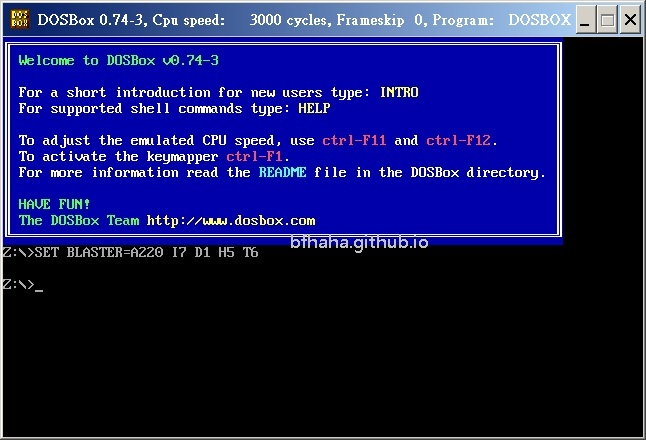
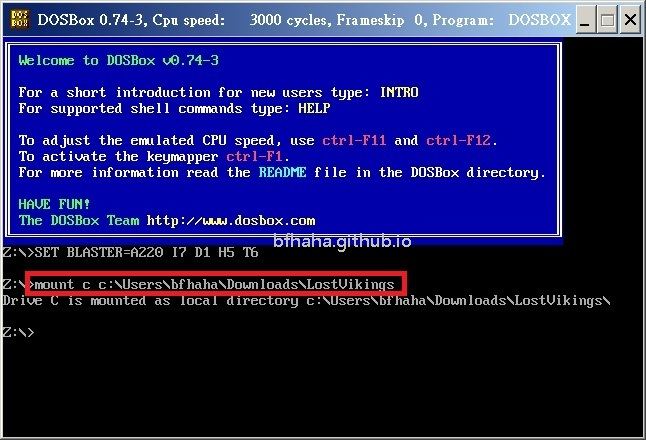

DOSBox教學
設定遊戲
- 到官方網站https://www.dosbox.com/下載DOSBox。

- 安裝後執行

- 下載遊戲並解壓縮，假設把遊戲放在
C:\Users\bfhaha\Downloads\LostVikings，我們就要在DOSBox中掛載這個目錄，例如mount c c:\Users\bfhaha\Downloads\LostVikings。第一個c表示我們要在DOSBox中建立一個虛擬的磁碟c，然後後面的目錄表示這個虛擬的磁碟c所指向的資料夾。

- 接著我們利用指令
c:把目錄切換到這個虛擬的c槽。

- 輸入
dir可以檢視當前目錄裡的檔案。

- 注意到裡面有一個setup.exe檔案（隨著遊戲不同可能有所變化），輸入
setup即可開始遊戲。

- 設定音效，注意到選擇到不好的音效卡會大幅降低遊戲音樂的呈現品質。

- 按照指示輸入即可開始遊戲。

- 開始遊戲。

設定搖桿
- 首先當然要先插入搖桿，筆者用的是Logitech Gamepad F310，USB介面，就是在順發3C買的最陽春的那種。

- 回到剛才進到DOSBox的畫面，我們現在要設定搖桿，按下Ctrl+F1。

- 會顯示鍵盤，我們現在要做的就是設定搖桿的按鍵要對應到鍵盤上的哪一個按鍵。

- 直接用滑鼠點選要設定的鍵盤按鍵，例如a，並按下Add。

- 這時候會等待輸入搖桿上的按鍵。

- 按下搖桿上對應的按鍵即可，成功的話可以看到顯示搖桿上的對應按鍵。

- 最後按下Save，即可儲存這個對應。

- 下次執行遊戲時，可以看到會自動讀取上次儲存的按鍵對應檔。